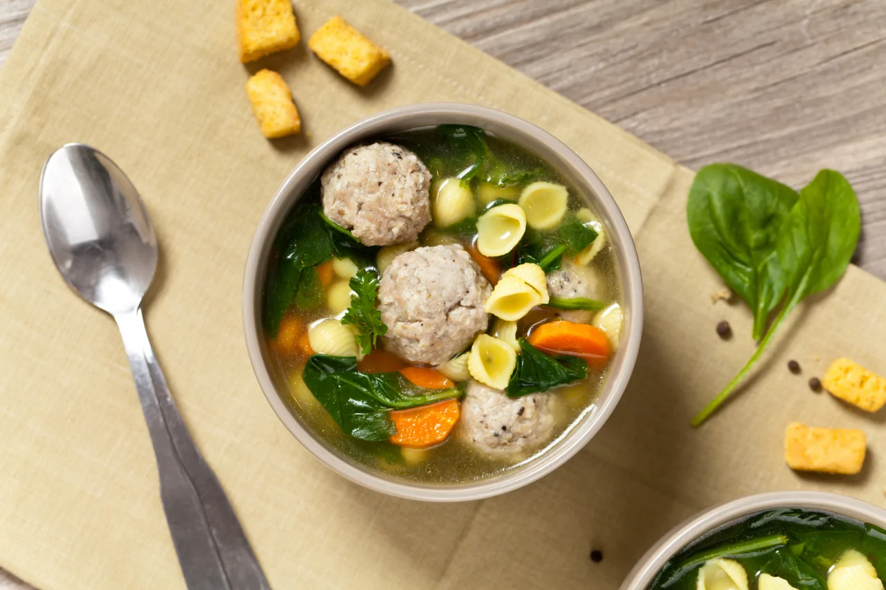
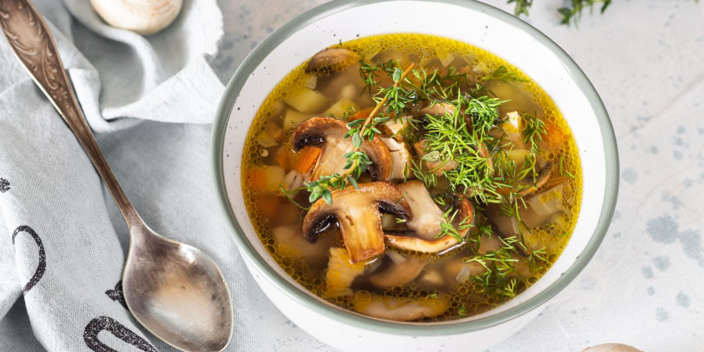
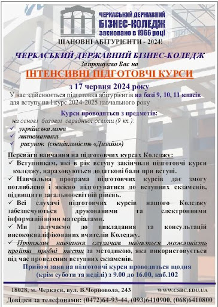

Бланк
Бланк
| Блюдо | Ціна | Доставка | Рецепт | Спонсор |
|---|---|---|---|---|
| Суп з фрикадельками | $9.99 | $2.99 (2 дня) |  | |
| Грибний суп | $7.99 | $1.99 (1 день) |
Вам знадобиться:
Фарш м'ясний (свинячо-яловичий) - 250 г
.Картопля - 3-4 шт.
Цибуля ріпчаста - 3 невеликих
.Морква - 1 середня
Яйце - 1 шт.
Соль - за смаком
Перець мелений - за смаком
Зелень свіжа - за смаком
Олія рослинна - для смаження
Вам знадобиться:
Картошка - 2-3 шт.
Морква - 1 шт.
Цибуля ріпчаста - 1 шт.
Макаронні вироби (за бажанням) - 100 г
Олія рослинна - 30 мл
.Соль - 0,5-1 ст. ложки
Перець мелений - 1 щіпка
Зелень петрушки - 0,5 пучка
Вода - 2,5 л